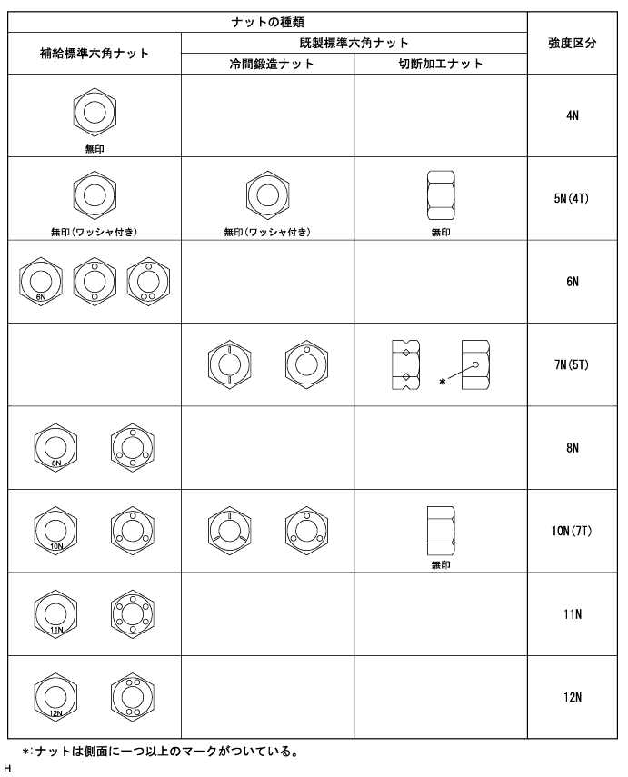

Standard Bolt Strength Classification of General Standard Nuts
Print

□ HINT □
When replacing a nut, use one with the same strength class number as the nut, or one with a higher class number than that of the mating bolt. (Example: bolt = 4T, nut = 4N or higher)